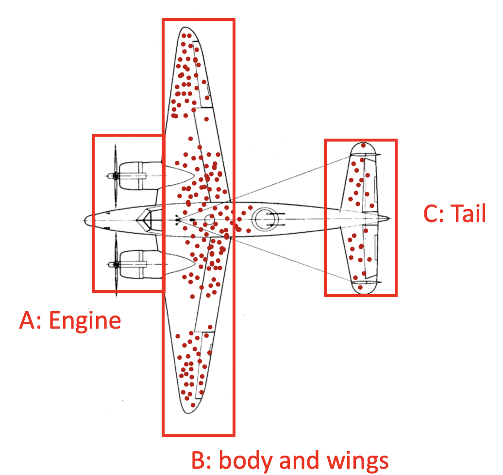
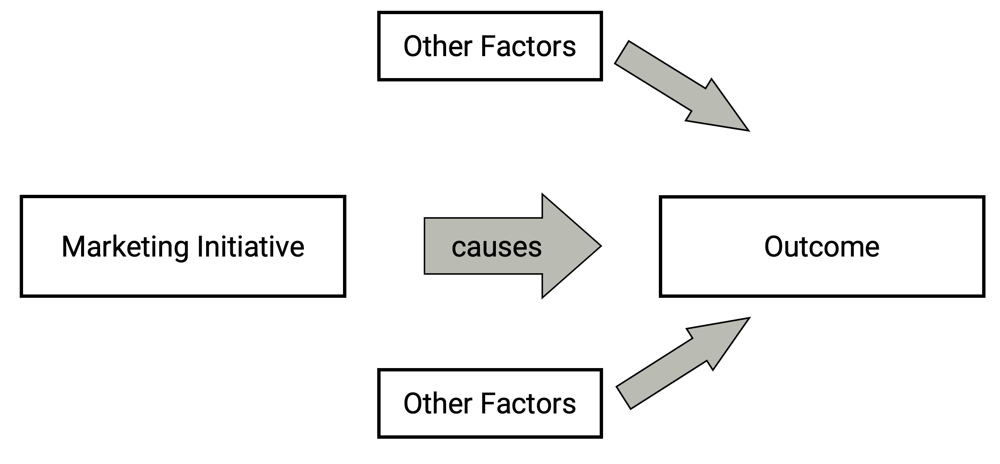

| Subject | $Y^1$ | $Y^0$ | $Y^1 - Y^0$ |
|---|---|---|---|
| Dr Strange | 0.7 | 0.6 | 0.1 |
Class 9 Causal Inference
1 Causal Inference
1.1 Our Journey So Far
To make business decisions, we need two pieces of information for cost-benefit analyses (e.g., NPV and CLV)
Cost of the business activity
- Easy to estimate ex ante via budgeting
- We can use predictive analytics to conduct targeted marketing to reduce costs
Expected benefit of the business activity
We’re given this information in the case studies so far
- (PineApple) incremental sales from influencer marketing: 2.5% additional sales
- (1st assignment) loyalty program increases retention rate
In reality, this “benefit” information is not readily available, and will be for us to estimate. We need to use causal inference tools to obtain this information scientifically.
1.2 Learning Objectives
Understand key concepts of causal inference and Rubin’s potential outcome framework
Learn the steps to conduct randomized controlled trials (RCTs)
Able to design appropriate RCTs to solve real-life marketing problems
1.3 Why Causal Inference Matters? Example 1
Car manufacturer BMW partnered with a car dealership (“the retailer”) for an online advertising campaign. Ads are targeted to individuals who are predicted to have a higher likelihood of being in the market to buy a car. In the end, a customer either saw no ads, saw only the dealership (retailer) ads, saw only the BMW (manufacturer) ads, or saw both the dealership and BMW ads. The conversion rates for each group are shown below.

Question: What can you conclude from this chart? Are you confident to recommend to your manager that the ads are effective in acquiring customers?
1.4 Why Causal Inference Matters? Example 2
A bubble tea business owner Tom bought a marketing survey dataset from a consulting agency. The survey collected customers’ purchase intention for different bubble shops in Canary Wharf. After running a correlation test between item price and purchase intention for all bubble tea shops, he finds that there is a positive correlation. That is, pricy items tend to have higher purchase intention. Tom concluded that he should increase the bubble tea price in his shop so that the sales will increase accordingly.
Question: What is your favoriate bubble tea flavor?
1.5 Why Causal Inference Matters? Example 3
This is a plane that just returned from the battlefield. Red dots are bullet holes.
Which part of A, B, and C would you reinforce to increase the pilot’s survival rate?

1.6 Why Causal Inference Matters? Example 4
To test the effectiveness of a new COVID vaccine, the government sent invites to the general public to seek volunteers for the clinical trial. The voluntarily recruited subjects then received the vaccination.
After 3 months, the government ran a t-test on the infection rate between general public who didn’t receive the vaccine versus volunteers who received the vaccine, and found that the infection rate was statistically indifferent.
The scientists concluded that the new vaccine is ineffective and should not be adopted.
What is your take?
1.7 Nobel Prize in Economics of Year 2021
[…] the other half jointly to Joshua D. Angrist and Guido W. Imbens “for their methodological contributions to the analysis of causal relationships.”
1.8 Causal Inference
Causal inference is the process of determining the unbiased, actual, causal effect of a particular intervention on the outcome.
Correlation != Causation !!!
- On rainy days, we observe more umbrellas on the street
- correct correlational statement: number of umbrellas is positively correlated with rainfall
- correct causal statement: more rainfall causes more umbrellas
- incorrect causal statement: more umbrellas cause more rainfall
- Causality becomes less straightforward in the business world, and managers can easily make mistakes if not understanding how to infer causal relations. It’s extremely important for you to train a “causal mindset”
1.9 Rule of Thumb for Checking Causal Inference for Business Managers

Essentially, we need to show
- If we run the initiative, the desired outcome occurs
- This proves: The desired outcome occurs when we run the initiative
- If we do not run the initiative, the desired outcome does not occur
- This proves: The outcome was not caused by other factors
- This step is to rule out alternative explanations
1.10 Revisit of BMW Example
- If we show the ads to the targeted customers, will the sales be higher compared with customers who didn’t see the ads?
- If we do not show the ads to the targeted customers, will the sales be higher compared with customers who didn’t see the ads?
Therefore, the BMW ads campaign can NOT reveal the causal effect of the ads.
2 Rubin Causal Model
2.1 Rubin Causal Model
- The Rubin causal model (RCM), also known as the Neyman–Rubin causal model, is an approach to the statistical analysis of cause and effect based on the framework of potential outcomes.
2.2 Treatment Allocation Rule
In RCM, treatment assignment is often denoted by the variable \(D_i\)
We will focus on A-B testing this week, where there are 2 groups, a treatment group and a control group
- \(D_i = 1\) if customer \(i\) receives the treatment and thus is in the treatment group
- \(D_i = 0\) if customer \(i\) does not receive the treatment and thus is in the control condition
Treatment allocation rule determines how treatment is assigned to individuals
- Let customer make their own choices into treatment/control
- Let customers be randomized into treatment/control
2.3 Potential Outcome and Individual-Level Treatment Effect
For each unit \(i\), we define two potential outcomes:
\(Y^1_i\): the outcome that unit \(i\) is going to have if it receives the treatment
\(Y^0_i\): the outcome that unit \(i\) is going to have if it does not receive the treatment
The causal effect of our training program is the difference between \(Y^1_i\) and \(Y^0_i\). Define the individual treatment effect as
\[ \delta_i = Y^1_i - Y^0_i \]
- The treatment effect is at the individual level, so it can vary across the population.
2.4 An Illustration of Individual Treatment Effect
Tom would like to measure the causal effect of introducing a loyalty program (LP) on customer retention.
Let’s say we have retrieved all infinity stones from Thanos, and have created 2 parallel universes, where everything else is equal, except that only in universe 1 Tom has adopted the LP.
For a random customer Dr Strange,
- In universe 1, Tom adopts the LP, and Dr Strange has a retention rate of 70%
- In universe 2, Tom does not adopt the LP, and Dr Strange has a retention rate of 60%.
- Conclusion: The treatment effect of LP on Dr Strange is +10%.
2.5 A Motivating Example: A Group of Customers
- We can collect a sample of customers, and estimate individual treatment effect for each of them
| Subject | $Y^1$ | $Y^0$ | $Y^1 - Y^0$ |
|---|---|---|---|
| Dr Strange | 0.70 | 0.60 | 0.10 |
| Iron Man | 0.55 | 0.50 | 0.05 |
| Thor | 0.80 | 0.72 | 0.08 |
| Hulk | 0.60 | 0.62 | -0.02 |
2.6 Fundamental Problem of Causal Inference
In reality, to measure the treatment effect of LP on a customer’s retention rate
We need to compare the outcome for the same individual customer in alternative universes, with and without the treatment.
However, in reality, we only observe one of these two outcomes, the realized outcome. The missing outcome is often called counterfactual outcome.
| Subject | $Y_1$ | $Y_0$ | $Y_1 - Y_0$ |
|---|---|---|---|
| Dr Strange | 0.7 | ? | ? |
| Iron Man | ? | 0.5 | ? |
| Thor | ? | 0.72 | ? |
| Hulk | 0.6 | ? | ? |
- Since it is impossible to see both potential outcomes at once, one of the potential outcomes is always missing. This dilemma is called the Fundamental Problem of Causal Inference.
2.7 Average Treatment Effect (ATE)
Individual treatment is never observed, and individual treatment effects are likely to vary with individual customers. Therefore, estimating individual treatment effects is infeasible and not policy interesting.
As data scientists/policymakers, we often care more about the treatment effects on the population, which is often referred to as the average treatment effects (ATE).
\[ ATE = E[\delta_i] = E[Y^1_i - Y^0_i] \]
2.8 ATT and ATU
Sometimes, we may also care about the treatment effects on the treated (ATT).
- e.g., NHS only gives booster jabs to vulnerable groups
\[ ATT = E[\delta_i|D_i = 1] = E[Y^1_i - Y^0_i|D_i = 1] \]
- Similarly, we can also define the Treatment Effect on the Untreated (ATU), but ATU is often of less interest to policymakers.
\[ ATU = E[\delta_i|D_i = 0] = E[Y^1_i - Y^0_i|D_i = 0] \]
- If treatment is randomly assigned among the whole population, then we have the following equality:
\[ ATE = ATT = ATU \]
2.9 Basic Identity of Causal Inference
Let’s say, in a dataset, based on some treatment assignment scheme, some individuals receive the treatment while others do not.
We can compare the average outcome of the treated with the average outcome of the untreated. But can this simple difference give us the average treatment effect?
Basic Identity of Causal Inference
Average outcome for treated - Average outcome for untreated
= [Average outcome for treated - Average counterfactual outcome for treated] + [Average counterfactual outcome for treated - Avereage outcome for untreated]
= ATT + Selection Bias
2.10 Basic Identity of Causal Inference: BMW Case
- If BMW only shows ads to customers who have shown a strong interest in buying from BMW through targeted marketing
- ATT != ATE, because those who saw the ads are different from those who didn’t.
- Selection bias is not equal to 0, because those who saw the ads alreayd have a higher purchase intention than those who didn’t.
2.11 Basic Identity of Causal Inference: Random Assignment
- If BMW randomly decides which customers see the ads rather than through targeted marketing
- If the treatment (i.e., seeing the ads) is randomly assigned among customers, the above figure gives causal effects, because
- The first term is an estimate of the ATT; but because customers are randomly selected, the treatment group and control group should be similar; therefore, we have ATT = ATU = ATE.
- The second term selection bias has an expected value of zero, because customers are randomly selected.
2.12 Concluding Remarks
Randomized Treatment not only makes sure ATE = ATT = ATU, but also fully removes selection bias.
This is why randomized experiments are considered the gold standard of causal inference.